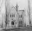

Preston was originally called Worm Creek when it was settled in 1888 because
the waterways in the area resembled worms as they curved and wound their way through the countryside.
(Another story relates that it was actually WARM Creek, because of the many hot springs in the area,
but someone got it wrong and WORM Creek stuck!)
old_academyRelics of Preston’s historic past can be seen in the Oneida Stake Academy building,
built in 1890 and which once again made history in 2003 when it was moved, in one piece,
to its new home in Benson Park in the city center of Preston. As far as we know, the Academy is the largest,
highest, and heaviest building to be moved intact in U.S. history.
Restoration of the grand old lady of Preston is under way...
CONTINUE READING PRESTON IDAHO...
Preston Idaho
Weather Summary
Currently:
High: °F
Wind Chill: °F
Humidity: %
Wind Speed: MPH
5 Day Forecast
